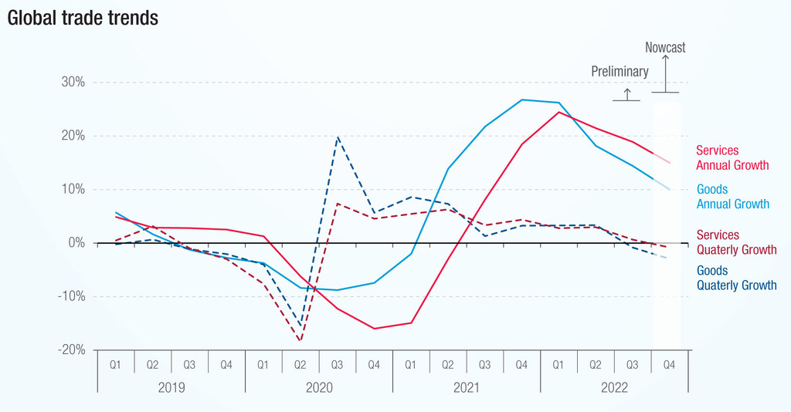

الأدفاق التجارية العالمية
مقدمة
تجسد الأدفاق التجارية إلى جانب بقية الأدفاق (سياحية – مالية – إعلامية) ترابط المجال العالمي، وذلك نتيجة لتناميها بنسق سريع منذ تسعينات القرن العشرين. فما هي مظاهر نمو الأدفاق التجارية وما هي عواملها؟
I أدفاق تجارية متنامية: المظاهر والعوامل
1. مظاهر تنامي الأدفاق التجارية
أ. نسق نمو سريع
تضاعف إجمالي الأدفاق التجارية العالمية قرابة 13 مرة بين 1980 و2024 لتبلغ 32991 ألف مليار دولار سنة 2024، وشمل النمو كل من أدفاق السلع والخدمات التجارية:
- تضاعفت قيمة أدفاق السلع قرابة 12 مرة لتبلغ قيمتها 24588 مليار دولار سنة 2024.
- تضاعفت قيمة أدفاق الخدمات التجارية 19 مرة منذ 1980 لتبلغ 8403 مليار دولار سنة 2024.
- شمل النمو جزأي العالم رغم أنه كان بنسق أسرع في بلدان الجنوب خاصة آسيا.
ملاحظة: يتسم نسق نمو الأدفاق التجارية العالمية بالتذبذب نتيجة لتأثره بالأوضاع العالمية، مثال تراجعت نسبة نمو الصادرات العالمية للسلع بين 2019 و2020 بنسبة -8% بسبب جائحة كورونا.
ب. تدعم حصة الأدفاق التجارية في اقتصاد العالم
ارتفعت حصة الأدفاق التجارية من الناتج الداخلي الخام العالمي من قرابة الربع سنة 1980 إلى قرابة الثلث (29%) سنة 2024.
يجسد نمو الأدفاق التجارية العالمية مظهراً من مظاهر العولمة وترابط المجال العالمي، إلا أنه لم يفض إلى عولمة كاملة نظراً لهيمنة "الأدفاق ضمن الإقليمية" (مثال تمثل المبادلات ضمن الإقليمية أكثر من ثلثي إجمالي المبادلات الأوروبية (66.2%) سنة 2024).
2. عوامل تنامي الأدفاق التجارية
أ. تحولات الاقتصاد العالمي
عولمة الاستثمار الأجنبي المباشر: ارتفع عدد فروع الشركات عبر القطرية التي تسعى إلى اعتماد تقسيم عالمي جديد للعمل يقوم على تجزئة الإنتاج وتوطين الفروع في الخارج للاستفادة من الامتيازات (ضعف الأجور، انخفاض كلفة المواد الأولية، اقتحام أسواق جديدة…)، وهو ما أدى إلى تكثف المبادلات ضمن الشركات (بين الشركة الأم وفروعها) إلى جانب ارتفاعها بين الشركات (بين مناطق الإنتاج ومناطق الاستهلاك).
الانفتاح الاقتصادي لدول الجنوب: اعتمدت البلدان النامية سياسة التصنيع الحاث على التصدير مما ساهم في نمو مبادلاتها التجارية منذ سبعينات القرن العشرين، بالإضافة إلى تطبيقها لسياسة الانفتاح الاقتصادي منذ ثمانينات القرن العشرين خاصة بعد تطبيق برنامج الإصلاح الهيكلي الذي فرضه عليها صندوق النقد الدولي.
ب. تحرير التجارة العالمية
- جولات المفاوضات داخل المنظمات التجارية العالمية "الغات" من 1947 إلى 1994 ثم خلفتها المنظمة العالمية للتجارة 1995، وتمكنت من التخفيض في الرسوم الجمركية على المنتجات الصناعية وبعض الخدمات التجارية.
- إبرام اتفاقيات ثنائية وإنشاء مناطق تبادل حر واتحادات اقتصادية (الاتحاد الأوروبي) وأسواق مشتركة (المركسور) ساعدت على تحرير التجارة العالمية.
ج. عوامل تقنية مساعدة
- الثورة التقنية في مجال النقل البحري واعتماد "الصندقة" مما ساعد على الزيادة في الحمولة والضغط على تكاليف النقل.
- تطور الخدمات البنكية والتأمين.
- تطور تكنولوجيات النقل والاتصال ساعد على تسهيل إبرام الصفقات التجارية وتنقل رؤوس الأموال والربط بين الشركة الأم وفروعها.
خاتمة
تتنامى الأدفاق التجارية العالمية بفعل تحولات الاقتصاد العالمي وتحرير التجارة وتطور التقنيات، مما يجسد ترابط المجال العالمي ويبرز مظاهر العولمة.
📖 تعريفات
🏢 منظمات ومؤسسات
- الشركات عبر القطرية: شركة كبرى تمارس أنشطتها مباشرة أو عن طريق فروعها في الخارج مع الحفاظ على مقرها الاجتماعي في بلدها الأصلي، تسعى للاستفادة من فوارق كلفة الإنتاج وتجزئة مراحل الإنتاج.
- المنظمة العالمية للتجارة: منظمة دولية تأسست سنة 1995 تضم 166 عضواً و20 مراقباً، تعمل على تحرير التجارة العالمية عبر خفض الرسوم الجمركية وفض النزاعات ووضع السياسات الاقتصادية.
- صندوق النقد الدولي: منظمة مالية عالمية أنشئت سنة 1944، تضم 190 بلداً عضواً، تسعى إلى فرض النموذج الليبرالي للتنمية وتخضع لهيمنة القوى الرأسمالية الكبرى.
📌 مصطلحات أخرى
- الصندقة: نظام النقل بالحاويات الموحدة الذي سهل الشحن وزاد من حمولة السفن وخفض تكاليف النقل البحري.
- التصنيع الحاث على التصدير: سياسة تنموية اعتمدتها بلدان الجنوب تقوم على توجيه الصناعات نحو الأسواق الخارجية لتحقيق النمو.
🗺️ خرائط ومعطيات مصورة
